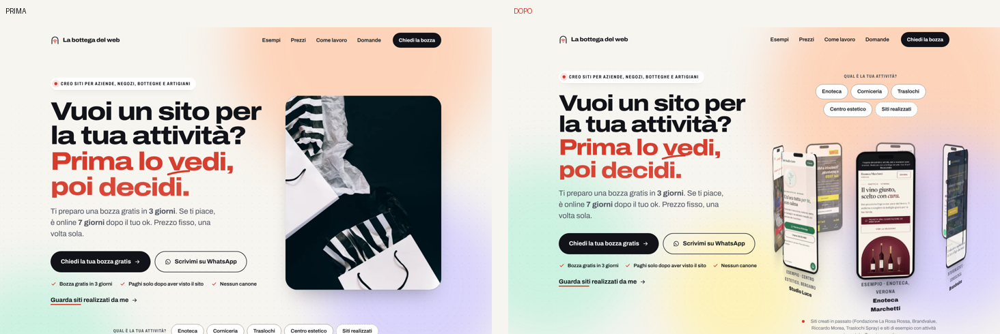
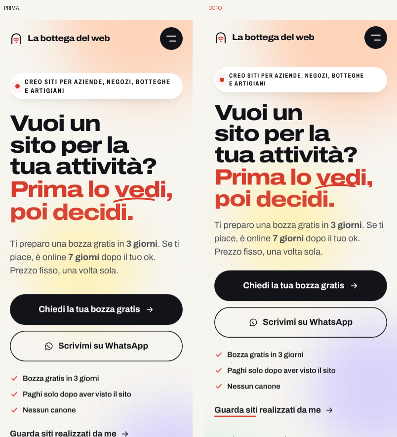
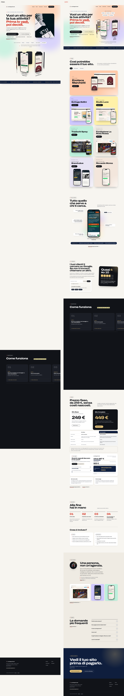
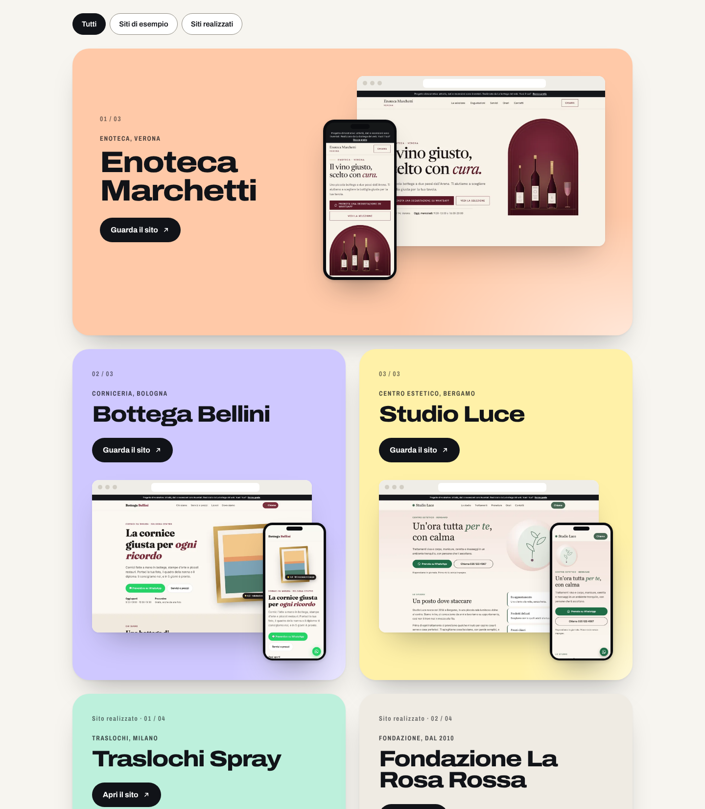
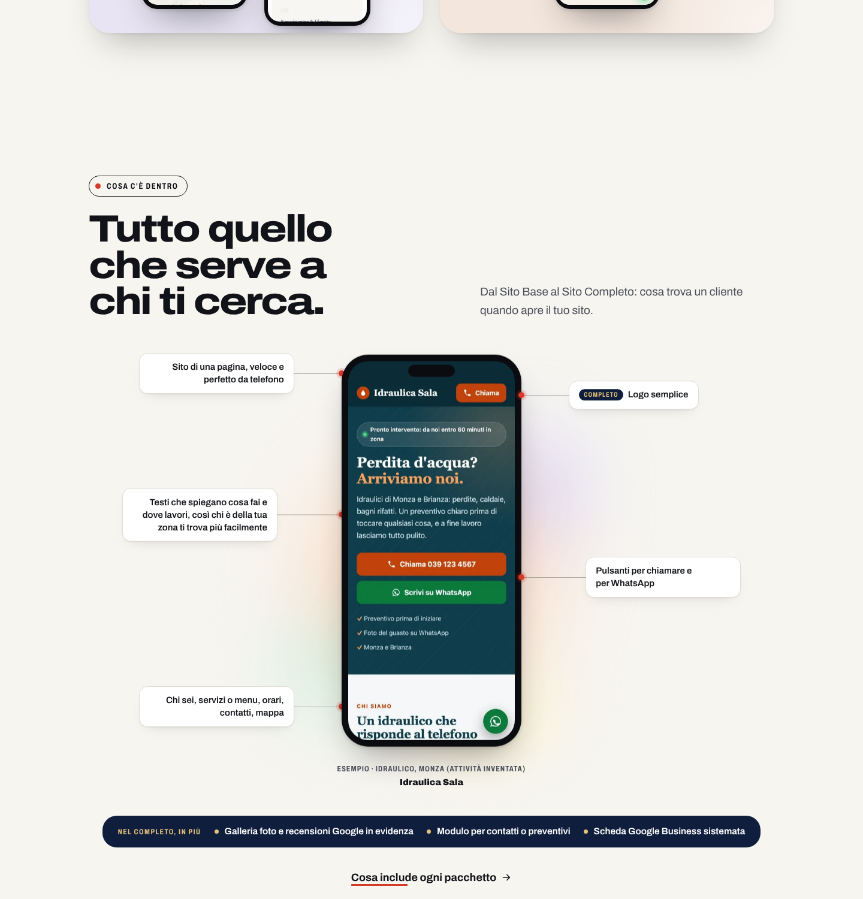
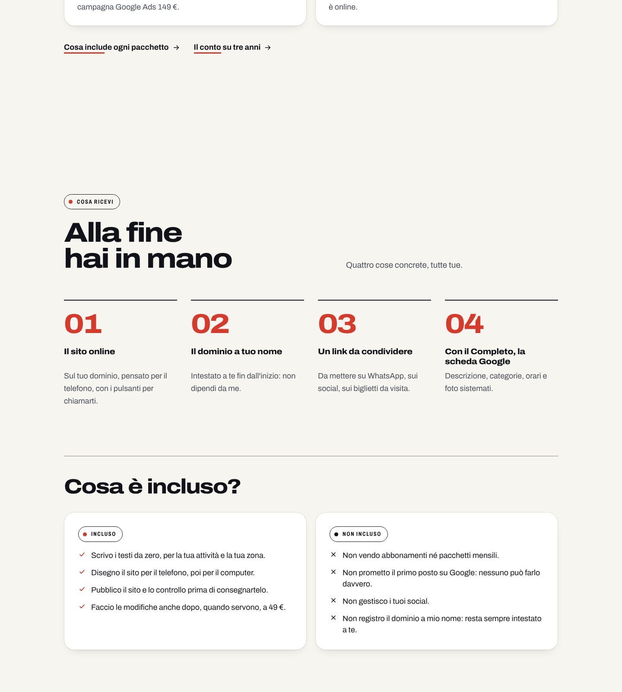

Prima e dopo: cosa cambia nella home
A sinistra il sito attuale, a destra la versione evoluta. Stessa identità per scelta: cambiano il primo schermo, la lunghezza, due sezioni nuove e molti dettagli.
Apri la versione evoluta1. Primo schermo da computer
Prima: foto stock di sacchetti. Dopo: la giostra 3D dei tuoi progetti nel primo schermo, con le chip "Qual è la tua attività?" sopra. Chi arriva vede subito siti veri che ruotano.

2. Primo schermo da telefono
Identico per scelta: il testo e i due pulsanti sono già giusti. Subito sotto, dove prima c'era la foto, ora ci sono le chip e la giostra.

3. La pagina intera
Prima: 15.860 px, con un blocco scuro quasi vuoto ("Come funziona" a scorrimento orizzontale) e sette card a tutta larghezza. Dopo: le stesse sezioni più compatte, due sezioni nuove, il blocco scuro accorciato.

4. Esempi a due colonne
Stesse card colorate, stesse composizioni browser + telefono, ma a due colonne con la prima a tutta larghezza: da circa 4.500 px a 2.600 px.

5. Nuova sezione: "Cosa c'è dentro"
Un telefono con il sito di esempio dell'idraulico e i callout di ciò che include il Base; sotto, la striscia "Nel Completo, in più". Testi presi dalla pagina Prezzi.

6. Nuova sezione: "Alla fine hai in mano" + "Cosa è incluso?"
I quattro risultati concreti e le due colonne Incluso / Non incluso, dalla pagina Come lavoro. "Non prometto il primo posto su Google" vale più di qualsiasi recensione.

7. Le cose che non si vedono
- Prezzi: due pannelli in più ("Se ti serve altro", "Come si paga"); filetto oro della tabella corretto.
- Come funziona: corsa più corta; corretta la quarta carta tagliata a 1024 px.
- Domande: da 3 a 6. Chi c'è dietro: la riga sui siti fatti per La Rosa Rossa e Brandvalue.
- Testi alternativi mancanti su 4 immagini; dati strutturati FAQ e offerte per Google; precaricamento di Esempi, Prezzi e Contatti; transizioni tra pagine; aree di tocco da 44 px.
- Tutti i testi esistenti identici: 197 frammenti su 197. Nessuna recensione, cliente o numero inventato.